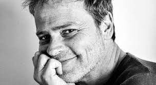

2023 / 2024
Bérénice
Racine · Muriel Mayette-Holtz
Titus — Rôle principal
Théâtre National de Nice · Tournée Paris, Suisse, Belgique
Clôture de l'amour
Pascal Rambert · Fabienne Colson · Frédéric de Goldfiem
Stan — Rôle principal
Théâtre de l'eau vive, Nice
Caricatures Miniatures
Frédéric de Goldfiem : Texte et Mise en scène
Le bouffon — Rôle principal
Théâtre National de Nice · Avignon 2025
2022 / 2023
Les Fourberies de Scapin
Molière · Muriel Mayette-Holtz
Sylvestre, l'ami de Scapin
Théâtre National de Nice · Tournée région PACA
Les Amours de Zelinda et Lindoro (La Trilogie)
Goldoni · Muriel Mayette-Holtz
Frederico, l'amant
Théâtre National de Nice · Tournée Paris (La Scala), Suisse, France
2021 / 2022
Chat en Poche
Feydeau · Muriel Mayette-Holtz
Pacarel — Rôle principal
Théâtre National de Nice
Le Jeu de l'amour et du Hasard
Marivaux · Muriel Mayette-Holtz
Mario
Théâtre National de Nice · Tournée PACA
Dissonances Jeanne d'Arc
Écriture au plateau · Frédéric de Goldfiem
Théâtre National de Nice
2010 / 2020
Le secret des nénuphars
Daniel Benoin
L'Avare
Molière · Daniel Benoin
Un beau ténébreux
Mathieu Cruciani
La nuit juste avant les forêts
Koltès · Frédéric de Goldfiem
Dans la solitude des champs de cotons
Koltès · Christophe Laparra
Des jours et des nuits à Chartres
Daniel Benoin
Le petit Prince
Saint-Exupéry · Jacques Bellay
En attendant Godot
Beckett · Paul Charrieras
Crimes et Châtiments
Dostoïevski · Claudine Pelletier
La Mouette
Tchekhov · Marie Léna Yunker
2000 / 2009
Faces
Cassavetes · Daniel Benoin
Rock and Roll
Tom Stoppard · Daniel Benoin
Maître Puntila et son valet Matti
Brecht · Daniel Benoin
Festen
Thomas Vinterberg · Daniel Benoin
La cantatrice chauve
Ionesco · Daniel Benoin
Le Bagne
Jean Genet · Antoine Bourseiller
